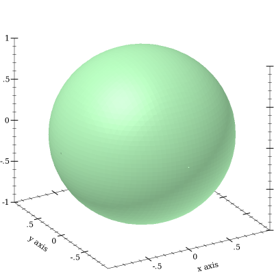

1 Introduction
1.1 Plotting 2D Graphs
To plot a one-input, real-valued function, first (require plot), and then try something like
> (plot (function sin (- pi) pi #:label "y = sin(x)"))
The first argument to function is the function to be plotted, and the #:label argument becomes the name of the function in the legend.
1.2 Terminology
In the above example, (- pi) and pi define the x-axis bounds, or the closed interval in which to plot the sin function. The function function automatically determines that the y-axis bounds should be [-1,1].
The function function constructs a renderer, which does the actual drawing. A renderer also produces legend entries, requests bounds to draw in, and requests axis ticks and tick labels.
The plot function collects legend entries, bounds and ticks. It then sets up a plot area with large enough bounds to contain the renderers, draws the axes and ticks, invokes the renderers’ drawing procedures, and then draws the legend.
1.3 Plotting 3D Graphs
To plot a two-input, real-valued function as a surface, first (require plot), and then try something like
The documentation can’t show it, but in DrRacket you can rotate 3D plots by clicking on them and dragging the mouse. Try it!
> (plot3d (surface3d (λ (x y) (* (cos x) (sin y))) (- pi) pi (- pi) pi) #:title "An R × R → R function" #:x-label "x" #:y-label "y" #:z-label "cos(x) sin(y)")
This example also demonstrates using keyword arguments that change the plot, such as #:title. In PLoT, every keyword argument is optional and almost all have parameterized default values. In the case of plot3d’s #:title, the corresponding parameter is plot-title. That is, keyword arguments are usually shortcuts for parameterizing plots or renderers:
When parameterizing more than one plot, it is often easier to set parameters globally, as in (plot-title "Untitled") and (plot3d-angle 45).
There are many parameters that do not correspond to keyword arguments, such as plot-font-size. See Plot and Renderer Parameters for the full listing.
> (parameterize ([plot-title "An R × R → R function"] [plot-x-label "x"] [plot-y-label "y"] [plot-z-label "cos(x) sin(y)"]) (plot3d (contour-intervals3d (λ (x y) (* (cos x) (sin y))) (- pi) pi (- pi) pi)))
This example also demonstrates contour-intervals3d, which colors the surface between contour lines, or lines of constant height. By default, contour-intervals3d places the contour lines at the same heights as the ticks on the z axis.
1.4 Plotting Multiple 2D Renderers
Renderers may be plotted together by passing them in a list:
> (plot (list (axes) (function sqr -2 2) (function (λ (x) x) #:color 0 #:style 'dot) (inverse sqr -2 2 #:color 3)))
Here, inverse plots the inverse of a function. (Both function and inverse plot the reflection line (λ (x) x) identically.)
Notice the numbered colors. PLoT additionally recognizes, as colors, lists of RGB values such as '(128 128 0), color% instances, and strings like "red" and "navajowhite". (The last are turned into RGB triples using a color-database<%>.) Use numbered colors when you just need different colors with good contrast, but don’t particularly care what they are.
The axes function returns a list of two renderers, one for each axis. This list is passed in a list to plot, meaning that plot accepts lists of lists of renderers. In general, both plot and plot3d accept a treeof renderers.
Renderers generate legend entries when passed a #:label argument. For example,
> (plot (list (axes) (function sqr -2 2 #:label "y = x^2") (function (λ (x) x) #:label "y = x" #:color 0 #:style 'dot) (inverse sqr -2 2 #:label "x = y^2" #:color 3)))

Lists of renderers are flattened, and then plotted in order. The order is more obvious with interval plots:
> (plot (list (function-interval (λ (x) (- (sin x) 3)) (λ (x) (+ (sin x) 3))) (function-interval (λ (x) (- (sqr x))) sqr #:color 4 #:line1-color 4 #:line2-color 4)) #:x-min (- pi) #:x-max pi)
Clearly, the blue-colored interval between sine waves is drawn first.
1.5 Renderer and Plot Bounds
In the preceeding example, the x-axis bounds are passed to plot using the keyword arguments #:x-min and x-max. The bounds could easily have been passed in either call to function-interval instead. In both cases, plot and function-interval work together to determine y-axis bounds large enough for both renderers.
It is not always possible for renderers and plot or plot3d to determine the bounds:
> (plot (function sqr)) plot: could not determine sensible plot bounds; got x
∈ [#f,#f], y ∈ [#f,#f]
> (plot (function sqr #f #f)) plot: could not determine sensible plot bounds; got x
∈ [#f,#f], y ∈ [#f,#f]
> (plot (function sqr (- pi))) plot: could not determine sensible plot bounds; got x
∈ [-3.141592653589793,#f], y ∈ [#f,#f]
> (plot (list (function sqr #f 0) (function sqr 0 #f))) plot: could not determine sensible plot bounds; got x
∈ [0,0], y ∈ [0,0]
There is a difference between passing bounds to renderers and passing bounds to plot or plot3d: bounds passed to plot or plot3d cannot be changed by a renderer that requests different bounds. We might say that bounds passed to renderers are suggestions, and bounds passed to plot and plot3d are commandments.
Here is an example of commanding plot3d to override a renderer’s bounds. First, consider the plot of a sphere with radius 1:
> (plot3d (polar3d (λ (θ ρ) 1) #:color 2 #:line-style 'transparent) #:altitude 25) 
Passing bounds to plot3d that are smaller than [-1..1] × [-1..1] × [-1..1] cuts off the six axial poles:
> (plot3d (polar3d (λ (θ ρ) 1) #:color 2 #:line-style 'transparent) #:x-min -0.8 #:x-max 0.8 #:y-min -0.8 #:y-max 0.8 #:z-min -0.8 #:z-max 0.8 #:altitude 25)
1.6 Plotting Multiple 3D Renderers
Unlike with rendering 2D plots, rendering 3D plots is order-independent. Their constituent shapes (such as polygons) are sorted by view distance and drawn back-to-front.
> (plot3d (list (surface3d (λ (x y) 1) #:color "LavenderBlush") (surface3d (λ (x y) -1) #:color "LightSteelBlue")) #:x-min -1 #:x-max 1 #:y-min -1 #:y-max 1)
Here, the top surface is first in the list, but the bottom surface is drawn first.
1.7 Plotting to Files
Any plot can be rendered to PNG, PDF, PS and SVG files using plot->file and plot3d->file, to include in papers and other published media.
1.8 Colors and Styles
In papers, stick to dark, fully saturated colors for lines, and light, desaturated colors for areas and surfaces. Papers are often printed in black and white, and sticking to this guideline will help black-and-white versions of color plots turn out nicely.
To make this easy, PLoT provides numbered colors that follow these guidelines, that are designed for high contrast in color as well. When used as line colors, numbers are interpreted as dark, fully saturated colors. When used as area or surface colors, numbers are interpreted as light, desaturated colors.
> (parameterize ([interval-line1-width 3] [interval-line2-width 3]) (plot (for/list ([i (in-range -7 13)]) (function-interval (λ (x) (* i 1.3)) (λ (x) (+ 1 (* i 1.3))) #:color i #:line1-color i #:line2-color i)) #:x-min -8 #:x-max 8))
Color 0 is black for lines and white for areas. Colors 1..120 are generated by rotating hues and adjusting to make neighbors more visually dissimilar. Colors 121..127 are grayscale.
Colors -7..-1 are also grayscale because before 0, colors repeat. That is, colors -128..-1 are identical to colors 0..127. Colors also repeat after 127.
If the paper will be published in black and white, use styles as well as, or instead of, colors. There are 5 numbered pen styles and 7 numbered brush styles, which also repeat.
> (parameterize ([line-color "black"] [interval-color "black"] [interval-line1-color "black"] [interval-line2-color "black"] [interval-line1-width 3] [interval-line2-width 3]) (plot (for/list ([i (in-range 7)]) (function-interval (λ (x) (* i 1.5)) (λ (x) (+ 1 (* i 1.5))) #:style i #:line1-style i #:line2-style i)) #:x-min -8 #:x-max 8))